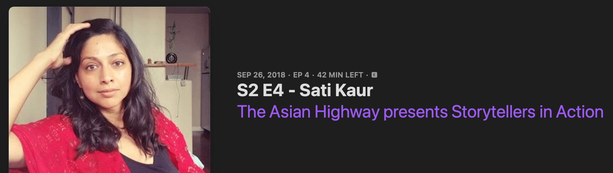

Satinder Kaur
About
Selected Works
Writing & Conversations
IMDB
Writing & Conversations
Published Writing
Scheherazade's Baghdad
Angels Flight • literary west
Kaurs Remember the Trauma of Punjab
Kaur Life
Podcasts

The Asian Highway: Storytellers in Action
Apple Podcasts
Served: Military Women's Stories
Apple Podcasts